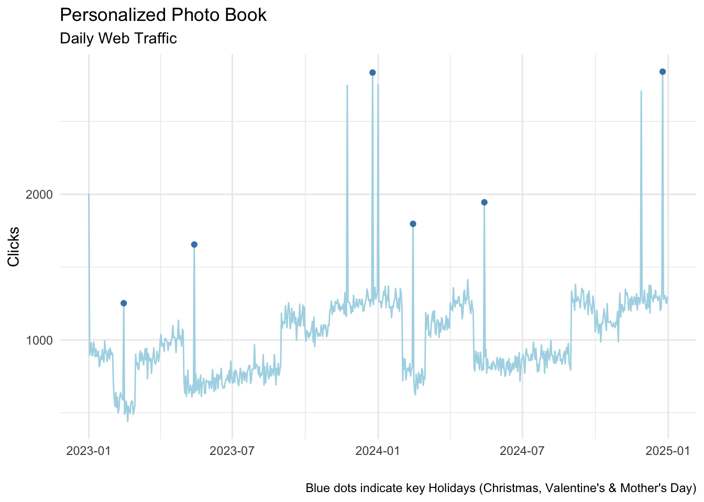
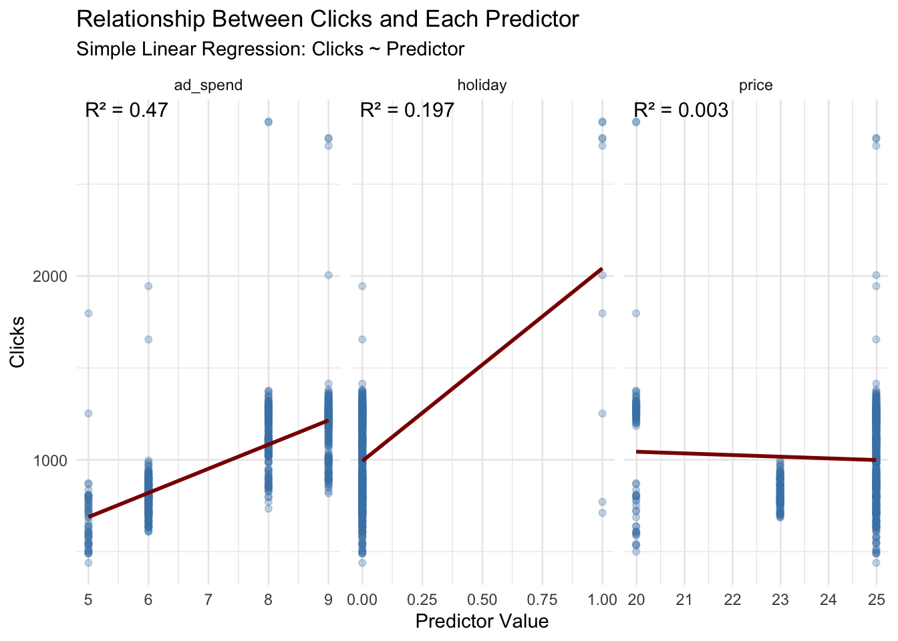
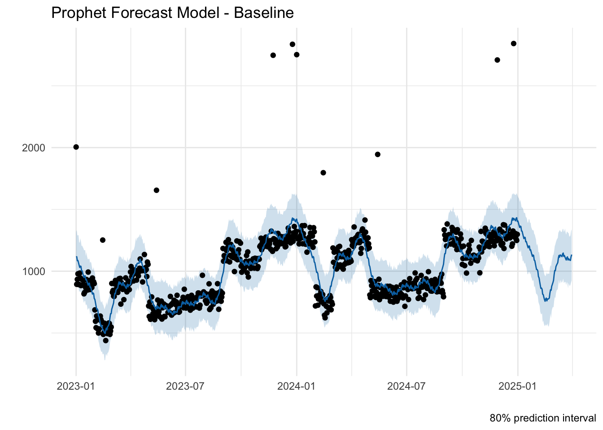
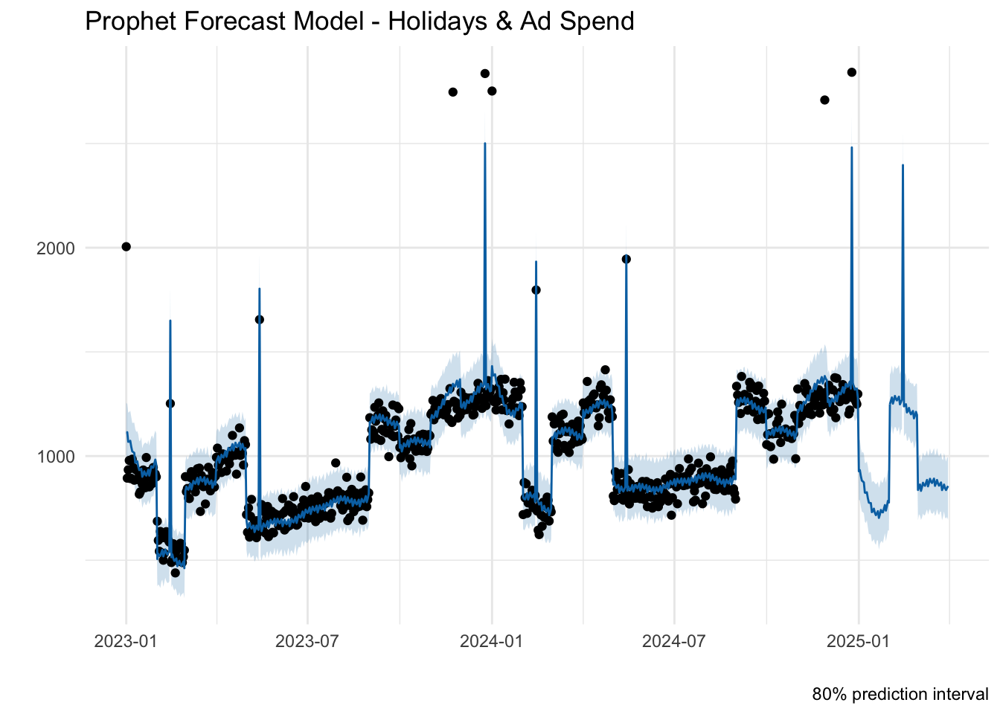

| Date | Price | Ad Spend | Holiday | Clicks |
|---|---|---|---|---|
| 2023-01-01 | 24.99 | 9 | 1 | 2005 |
| 2023-01-02 | 24.99 | 9 | 0 | 894 |
| 2023-01-03 | 24.99 | 9 | 0 | 934 |
| 2023-01-04 | 24.99 | 9 | 0 | 979 |
Using Holidays, sales price, and ad spend as predictors for clicks.
Summary
In this project, I built a time series forecasting model using Prophet in R to predict daily web traffic to a personalized photo book product page. While often viewed as a marketing KPI, web traffic can serve as an upstream demand signal with direct implications for supply chain, inventory, and revenue planning.
The model incorporates key demand drivers—product price, monthly ad spend, and seasonal holidays—and demonstrates how external factors influence customer engagement patterns over time. By modeling these relationships explicitly, the approach improves forecast accuracy while offering business users a clear view into the levers that shape demand.
This kind of signal-based forecasting supports scenario planning in the S&OP process, enabling teams to simulate the impact of pricing changes or shifts in media budget before they happen. It also lays the groundwork for forecasting downstream metrics like conversion rates, order volumes, and fulfillment needs—making it especially valuable in omnichannel or direct-to-consumer environments where agility and alignment are critical.
Objective
Build a daily web traffic forecast using Prophet in R to establish a reliable upstream signal of customer interest and demand potential.
Quantify the impact of promotional timing, ad spend, pricing, and holidays on web traffic patterns to enhance forecast accuracy.
Enable scenario-based forecasting by layering in forward-looking marketing assumptions—helping ensure alignment, visibility, and documentation during the demand review and forecast consensus stages of the S&OP process.
The following shows a preview of the data along with a visual of the complete web traffic trend over time:

Isolating Key Drivers of Web Traffic
To better understand what influences web traffic, I began by evaluating each business driver—holidays, price, and ad spend—on its own. By testing each variable independently in a simple regression, we gain early insights into how strongly each factor correlates with customer engagement.
The visualizations below highlight the directional relationship and signal strength of each driver, helping us identify which levers are most predictive of traffic patterns before layering them into a more advanced forecasting model.

Key Insights from Individual Regressions:
Ad Spend shows a strong, consistent relationship with web traffic. As investment increases, so do daily clicks—confirming that marketing spend is a reliable driver of customer engagement.
Holidays, while showing a modest R² value statistically, appear to double average daily clicks in practice. This suggests that holiday-driven spikes are sharp but infrequent—highlighting the value of targeted seasonal campaigns.
Price shows little direct impact on daily web traffic, indicating that click behavior is likely more sensitive to promotional messaging or marketing exposure than to pricing alone.
Building a Baseline Forecast
With a clearer understanding of the individual drivers of web traffic, the next step is to build a baseline forecast model using Prophet. This model leverages historical trends and seasonality to predict future daily clicks without any external inputs. It serves as a starting point to evaluate how much predictive power comes from the data's natural patterns alone—before layering in business drivers like holidays, price, or ad spend.
Prophet is an open-source library developed by Facebook for forecasting time series data. It’s available in both R and Python. More info can be found here.

The baseline forecast offers a solid foundation, accurately capturing long-term trends and seasonal dips—like the annual decline in January traffic. However, it fails to account for sharp, event-driven spikes around holidays. As a result, the model underpredicts key moments like the expected lift on Valentine's Day 2025, underscoring the need to include external drivers such as holidays to improve short-term accuracy.
Enhancing the Forecast with Holidays and Ad Spend
To improve the model's accuracy, the next step is to incorporate holiday events and monthly ad spend—two factors that have shown strong influence on web traffic. By adding these as external predictors, the model can better capture promotional spikes and the lift generated by marketing investment, resulting in a more realistic and actionable forecast.

This updated model demonstrates a meaningful improvement over the baseline. It successfully captures sharp spikes in traffic around key holidays—most notably the projected increase for Valentine's Day—and more accurately reflects patterns influenced by consistent monthly ad spend. By incorporating both seasonal events and marketing investment, the model produces a forecast that better aligns with real-world demand drivers and provides more actionable insight for planning.
Evaluating Forecast Accuracy
While the visual forecasts provide helpful context, it's difficult to assess which model performs better by sight alone. To compare models objectively, we'll use cross-validation—a statistical technique that evaluates forecast accuracy by testing each model's performance on historical data.
Cross-validation is a technique to evaluate how well a model can predict future values by using historical data. It helps determine if a model will generalize well to new, unseen data, which is essential for making accurate forecasts. With respect to time series forecasting, cross-validation preserves the chronological order of observations.
| Model | MAE | RMSE | MAPE |
|---|---|---|---|
| Baseline Prophet | 105.269 | 154.150 | 10.68% |
| Holidays & Ad Spend | 82.836 | 107.618 | 8.39% |
Incorporating holidays and ad spend into the forecast model significantly improved accuracy. The enhanced model reduced the mean absolute error (MAE) by ~22%, the root mean squared error (RMSE) by ~30%, and the mean absolute percentage error (MAPE) from 10.68% to 8.39% compared to the baseline. This highlights the strong predictive value of aligning forecasts with seasonal events and marketing investment.
Conclusion
This project demonstrates how integrating marketing inputs into forecast models can improve accuracy and unlock strategic planning value. By identifying which levers—like ad spend, pricing, and holidays—most influence traffic, the model provides actionable insights to support budgeting, campaign timing, and performance optimization. Just as importantly, forecasting web traffic offers a forward-looking view of customer engagement, serving as a foundation for downstream KPIs like conversion, AOV, and revenue.
Expanding on that foundation, this approach reframes web traffic not only as a marketing KPI but as an upstream demand signal—a measurable indicator of intent that can be modeled and layered into the Demand Plan. By building a flexible, driver-based forecasting model in Prophet that accommodates both historical behavior and forward-looking marketing assumptions, demand planners can better align the forecast with business strategy. Price changes, promotional spikes, and shifts in advertising budget can be translated into quantified traffic expectations and rolled forward into volume forecasts.
This becomes especially valuable during the Demand Review stage of the S&OP process. Instead of debating assumptions in isolation, cross-functional teams can evaluate modeled scenarios side by side—anchoring forecast conversations in transparent, data-backed inputs. The result is stronger consensus, clearer accountability, and a more robust audit trail linking strategic levers to expected demand outcomes.
Ultimately, this project showcases how upstream marketing metrics—when forecasted thoughtfully—can reinforce downstream planning decisions. It lays the groundwork for a layered forecasting process that connects digital engagement to demand signals, and allows demand signals to permeate throughout S&OP. When done right, this approach transforms the forecast from a static output into a dynamic, assumption-driven tool that accelerates collaboration and improves business agility. You don’t just forecast demand—you picture it perfectly.
No matching items